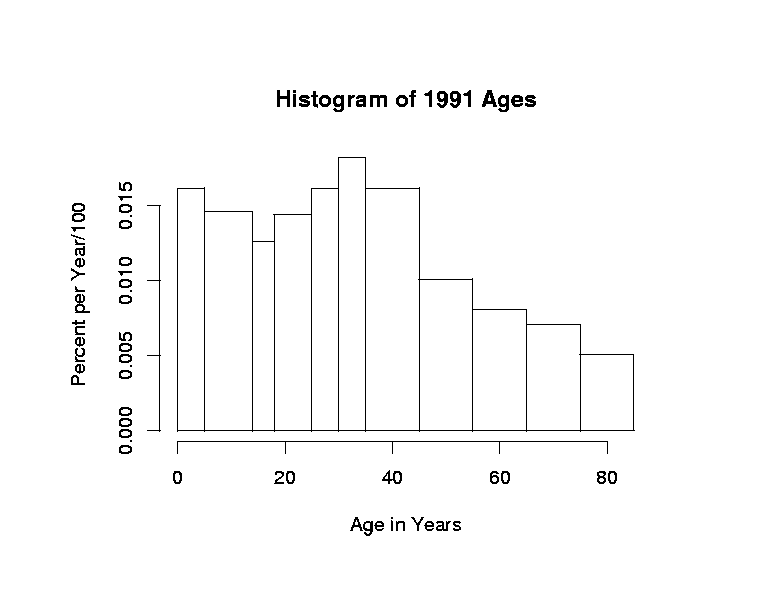
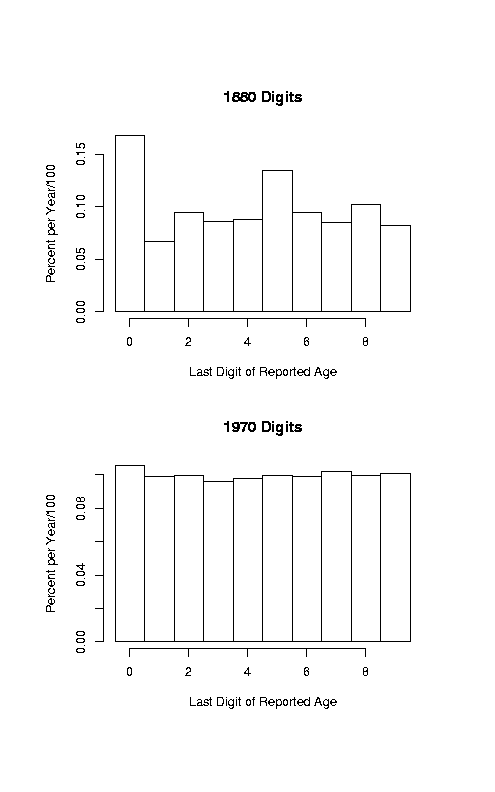

Stat 1040
Chapter 3 Solutions
Note: Using our density scale, your y-axis should be labeled
as this one times 100 (0, .5, 1.0, 1.5).

- There are more children age 1, because the histogram is higher there.
- There are more at 31.
- There are more age 35-44, that block has larger area.
- 50%
- 25%
- 99%
- 140-150 mm
- 135-140 mm
- About 10.5% (= 5 * 2.1%)
- 102-103 mm
- One of the millimeters between 115 and 120, say 117--118.
-
Lists (i) and (ii) but not (iii).
See the note above the problem 2 histogram.
-

- In 1880, people did not know their ages accurately and probably rounded off.
- In 1970, however, people knew better when they were born.
- In 1880 there seemed to be a stronger preference for even digits
(except for the ever-popular 5). This is probably due to rounding. In 1970 the preference was weak.